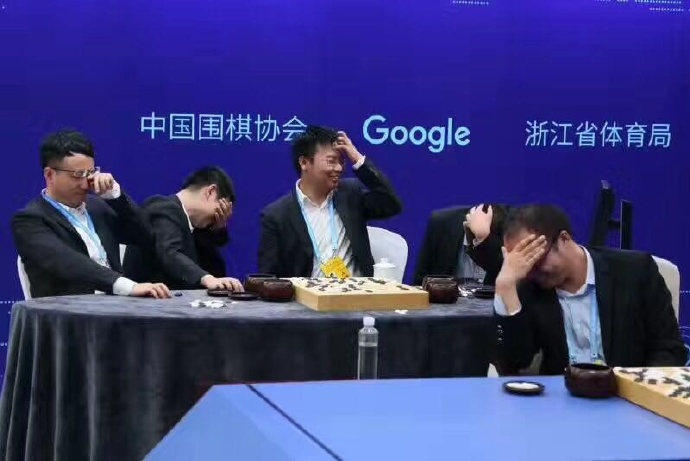

David Silver, Aja Huang, Chris J. Maddison, Arthur Guez, Laurent Sifre, George van den Driessche, Julian Schrittwieser, Ioannis Antonoglou, Veda Panneershelvam, Marc Lantot, Sander Dieleman, Dominik Grewe, John Nham, Nal Kalchbrenner, Ilya Sutskever, Timothy Lillicrap, Madeleine Leach, Koray Kavukcuoglu, Thore Graepel, Demis Hassabis, Mastering the game of Go with deep neural networks and tree search, Nature 529 (28 Jan 2016) 484–489.In Mar 2016 it played a match against Lee Sedol and won 4-1.
Around New Year 2017 an improved version played 60 fast games on the Tygem and Foxwq servers against various opponents and won 60-0.
In May 2017 it played a match against Ke Jie and won 3-0.
| date | black | white | result | #mv | sgf |
|---|---|---|---|---|---|
| 2015-10-05 | Fan Hui | AlphaGo | W+2.5 | 272 | sgf |
| 2015-10-06 | AlphaGo | Fan Hui | B+R | 183 | sgf |
| 2015-10-07 | Fan Hui | AlphaGo | W+R | 166 | sgf |
| 2015-10-08 | AlphaGo | Fan Hui | B+R | 165 | sgf |
| 2015-10-09 | Fan Hui | AlphaGo | W+R | 214 | sgf |
| date | black | white | result | #mv | sgf | sgfc |
|---|---|---|---|---|---|---|
| 2016-03-09 | Lee Sedol | AlphaGo | W+R | 186 | sgf | sgf |
| 2016-03-10 | AlphaGo | Lee Sedol | B+R | 211 | sgf | sgf |
| 2016-03-12 | Lee Sedol | AlphaGo | W+R | 176 | sgf | sgf |
| 2016-03-13 | AlphaGo | Lee Sedol | W+R | 180 | sgf | sgf |
| 2016-03-15 | Lee Sedol | AlphaGo | W+R | 280 | sgf | sgf |
| date | black | white | result | #mv | sgf |
|---|---|---|---|---|---|
| 2016-02-29 | AlphaGo | AlphaGo | W+2.5 | 274 | sgf |
| 2016-02-29 | AlphaGo | AlphaGo | W+R | 172 | sgf |
| 2016-02-29 | AlphaGo | AlphaGo | W+R | 202 | sgf |
| # | date | black | white | result | #mv | sgf |
|---|---|---|---|---|---|---|
| 1 | 2016-12-29 19:01:34 | Pan Tingyu | Magist | W+R | 146 | sgf |
| 2 | 2016-12-29 19:20:57 | Zhang Ziliang | Magist | W+R | 174 | sgf |
| 3 | 2016-12-29 19:49:39 | Magist | Ding Shixiong | B+R | 151 | sgf |
| 4 | 2016-12-29 20:14:20 | Xie Erhao | Magist | W+R | 222 | sgf |
| 5 | 2016-12-29 20:51:02 | Magist | Yu Zhiying | B+R | 113 | sgf |
| 6 | 2016-12-29 22:02:39 | Magist | Li Xiangyu | B+R | 131 | sgf |
| 7 | 2016-12-29 22:40:09 | Magist | Qiao Zhijian | B+R | 163 | sgf |
| 8 | 2016-12-29 23:07:52 | Han Yizhou | Magist | W+R | 104 | sgf |
| 9 | 2016-12-29 23:30:11 | Magist | Meng Tailing | B+4.5 | 275 | sgf |
| 10 | 2016-12-30 00:08:22 | Meng Tailing | Magist | W+R | 148 | sgf |
| 11 | 2016-12-30 10:02:17 | Chen Hao | Master | W+R | 170 | sgf |
| 12 | 2016-12-30 11:45:39 | Wang Haoyang | Master | W+R | 136 | sgf |
| 13 | 2016-12-30 12:06:51 | Liu Yuhang | Master | W+R | 144 | sgf |
| 14 | 2016-12-30 12:35:24 | Master | Yan Zaiming | B+R | 129 | sgf |
| 15 | 2016-12-30 13:02:15 | Park Junghwan | Master | W+T | 150 | sgf |
| 16 | 2016-12-30 13:52:26 | Lian Xiao | Master | W+R | 122 | sgf |
| 17 | 2016-12-30 14:45:18 | Lian Xiao | Master | W+R | 164 | sgf |
| 18 | 2016-12-30 16:15:35 | Master | Ke Jie | B+5.5 | 228 | sgf |
| 19 | 2016-12-30 16:48:03 | Ke Jie | Master | W+R | 128 | sgf |
| 20 | 2016-12-30 17:14:02 | Master | Park Junghwan | B+5.5 | 255 | sgf |
| 21 | 2016-12-31 09:30:30 | Chen Yaoye | Master | W+5.5 | 270 | sgf |
| 22 | 2016-12-31 10:18:13 | Chen Yaoye | Master | W+4.5 | 277 | sgf |
| 23 | 2016-12-31 13:09:13 | Master | Kim Junghyun | B+R | 135 | sgf |
| 24 | 2016-12-31 13:30:44 | Master | Park Junghwan | B+R | 223 | sgf |
| 25 | 2016-12-31 14:09:09 | Park Junghwan | Master | W+0.5 | 261 | sgf |
| 26 | 2016-12-31 16:39:33 | Master | Yun Chanhee | B+R | 217 | sgf |
| 27 | 2016-12-31 16:50:18 | Master | Fang Tingyu | B+R | 215 | sgf |
| 28 | 2016-12-31 19:39:54 | Master | Meng Tailing | B+R | 163 | sgf |
| 29 | 2016-12-31 20:05:34 | Mi Yuting | Master | W+0.5 | 311 | sgf |
| 30 | 2016-12-31 21:18:19 | Tang Weixing | Master | W+R | 186 | sgf |
| 31 | 2017-01-01 23:23:09 | Master | Li Qincheng | B+R | 179 | sgf |
| 32 | 2017-01-02 10:01:26 | Gu Li | Master | W+R | 154 | sgf |
| 33 | 2017-01-02 10:34:38 | Master | Gu Li | B+R | 191 | sgf |
| 34 | 2017-01-02 12:17:39 | Master | Dang Yifei | B+R | 149 | sgf |
| 35 | 2017-01-02 13:17:45 | Jiang Weijie | Master | W+1.5 | 280 | sgf |
| 36 | 2017-01-02 14:41:33 | Master | Gu Zihao | B+R | 209 | sgf |
| 37 | 2017-01-02 15:16:54 | Master | Park Yeonghun | B+R | 173 | sgf |
| 38 | 2017-01-02 16:51:34 | Master | Tuo Jiaxi | B+R | 239 | sgf |
| 39 | 2017-01-02 19:40:22 | Master | Iyama Yuta | B+R | 135 | sgf |
| 40 | 2017-01-02 20:52:52 | Meng Tailing | Master | W+2.5 | 274 | sgf |
| 41 | 2017-01-02 21:42:12 | Kim Jiseok | Master | W+R | 170 | sgf |
| 42 | 2017-01-03 10:22:04 | Master | Yang Dingxin | B+R | 125 | sgf |
| 43 | 2017-01-03 11:04:00 | Master | Kang Dongyun | B+R | 165 | sgf |
| 44 | 2017-01-03 13:51:15 | An Sungjoon | Master | W+2.5 | 260 | sgf |
| 45 | 2017-01-03 14:46:57 | Master | Shi Yue | B+R | 167 | sgf |
| 46 | 2017-01-03 15:29:19 | Lian Xiao | Master | W+R | 144 | sgf |
| 47 | 2017-01-03 16:45:23 | Master | Tan Xiao | B+R | 191 | sgf |
| 48 | 2017-01-03 20:17:29 | Park Junghwan | Master | W+1.5 | 270 | sgf |
| 49 | 2017-01-03 21:31:06 | Weon Seongjin | Master | W+R | 222 | sgf |
| 50 | 2017-01-03 22:13:23 | Ke Jie | Master | W+R | 178 | sgf |
| 51 | 2017-01-04 09:35:45 | Zhou Junxun | Master | W+R | 118 | sgf |
| 52 | 2017-01-04 10:40:25 | Fan Tingyu | Master | W+R | 202 | sgf |
| 53 | 2017-01-04 11:27:35 | Master | Huang Yunsong | B+R | 133 | sgf |
| 54 | 2017-01-04 15:02:36 | Master | Nie Weiping | B+7.5 | 254 | sgf |
| 55 | 2017-01-04 16:05:42 | Chen Yaoye | Master | W+1.5 | 267 | sgf |
| 56 | 2017-01-04 17:06:57 | Master | Cho Hanseung | B+R | 171 | sgf |
| 57 | 2017-01-04 19:35:45 | Master | Shin Jinseo | B+R | 139 | sgf |
| 58 | 2017-01-04 20:23:36 | Chang Hao | Master | W+R | 178 | sgf |
| 59 | 2017-01-04 21:18:23 | Master | Zhou Ruiyang | B+R | 161 | sgf |
| 60 | 2017-01-04 22:33:58 | Gu Li | Master | W+2.5 | 235 | sgf |
| date | black | white | result | #mv | sgf |
|---|---|---|---|---|---|
| 2017-05-23 | Ke Jie | AlphaGo | W+0.5 | 289 | sgf |
| 2017-05-25 | AlphaGo | Ke Jie | B+R | 155 | sgf |
| 2017-05-27 | AlphaGo | Ke Jie | B+R | 209 | sgf |
| date | black | white | result | #mv | sgf |
|---|---|---|---|---|---|
| 2017-05-26 | Gu Li & AlphaGo | Lian Xiao & AlphaGo | W+R | 220 | sgf |
| date | black | white | result | #mv | sgf |
|---|---|---|---|---|---|
| 2017-05-26 | Chen Yaoye, Zhou Ruiyang, Mi Yuting, Shi Yue, Tang Weixing | AlphaGo | W+R | 254 | sgf |
At the end the pro team played a tricky move in order to perhaps gain one or two points. AlphaGo generously gave them much more - it was so far ahead that that made no difference. The reaction:

| # | black | white | result | #mv | sgf |
|---|---|---|---|---|---|
| 1 | Alphago | AlphaGo | W+R | 256 | sgf |
| 2 | AlphaGo | AlphaGo | W+R | 312 | sgf |
| 3 | AlphaGo | AlphaGo | W+R | 206 | sgf |
| 4 | AlphaGo | AlphaGo | W+R | 244 | sgf |
| 5 | AlphaGo | AlphaGo | B+R | 307 | sgf |
| 6 | AlphaGo | AlphaGo | W+R | 240 | sgf |
| 7 | AlphaGo | AlphaGo | W+R | 272 | sgf |
| 8 | AlphaGo | AlphaGo | W+R | 236 | sgf |
| 9 | AlphaGo | AlphaGo | B+R | 255 | sgf |
| 10 | AlphaGo | AlphaGo | W+R | 266 | sgf |
| 11 | AlphaGo | AlphaGo | B+R | 279 | sgf |
| 12 | AlphaGo | AlphaGo | W+R | 180 | sgf |
| 13 | AlphaGo | AlphaGo | W+R | 182 | sgf |
| 14 | AlphaGo | AlphaGo | W+R | 308 | sgf |
| 15 | AlphaGo | AlphaGo | B+R | 285 | sgf |
| 16 | AlphaGo | AlphaGo | W+R | 224 | sgf |
| 17 | AlphaGo | AlphaGo | W+R | 256 | sgf |
| 18 | AlphaGo | AlphaGo | W+R | 250 | sgf |
| 19 | AlphaGo | AlphaGo | W+R | 248 | sgf |
| 20 | AlphaGo | AlphaGo | B+R | 299 | sgf |
| 21 | AlphaGo | AlphaGo | W+R | 318 | sgf |
| 22 | AlphaGo | AlphaGo | B+R | 315 | sgf |
| 23 | AlphaGo | AlphaGo | W+R | 296 | sgf |
| 24 | AlphaGo | AlphaGo | W+R | 264 | sgf |
| 25 | AlphaGo | AlphaGo | W+R | 206 | sgf |
| 26 | AlphaGo | AlphaGo | W+R | 204 | sgf |
| 27 | AlphaGo | AlphaGo | W+R | 290 | sgf |
| 28 | AlphaGo | AlphaGo | B+R | 329 | sgf |
| 29 | AlphaGo | AlphaGo | W+R | 202 | sgf |
| 30 | AlphaGo | AlphaGo | W+R | 288 | sgf |
| 31 | AlphaGo | AlphaGo | W+R | 312 | sgf |
| 32 | AlphaGo | AlphaGo | W+R | 186 | sgf |
| 33 | AlphaGo | AlphaGo | W+R | 346 | sgf |
| 34 | AlphaGo | AlphaGo | B+R | 215 | sgf |
| 35 | AlphaGo | AlphaGo | W+R | 270 | sgf |
| 36 | AlphaGo | AlphaGo | B+R | 305 | sgf |
| 37 | AlphaGo | AlphaGo | W+R | 256 | sgf |
| 38 | AlphaGo | AlphaGo | W+R | 236 | sgf |
| 39 | AlphaGo | AlphaGo | W+R | 276 | sgf |
| 40 | AlphaGo | AlphaGo | W+R | 266 | sgf |
| 41 | AlphaGo | AlphaGo | W+R | 262 | sgf |
| 42 | Alphago | AlphaGo | B+R | 309 | sgf |
| 43 | AlphaGo | AlphaGo | W+R | 256 | sgf |
| 44 | AlphaGo | AlphaGo | W+R | 258 | sgf |
| 45 | AlphaGo | AlphaGo | W+R | 340 | sgf |
| 46 | AlphaGo | AlphaGo | B+R | 307 | sgf |
| 47 | AlphaGo | AlphaGo | B+R | 321 | sgf |
| 48 | AlphaGo | AlphaGo | W+R | 276 | sgf |
| 49 | AlphaGo | AlphaGo | W+R | 304 | sgf |
| 50 | AlphaGo | AlphaGo | W+R | 286 | sgf |
| date | black | white | result | #mv | sgf | video |
|---|---|---|---|---|---|---|
| 2017-07-01 | AlphaGo | AlphaGo | W+R | 210 | sgf | video |
| 2017-07-01 | AlphaGo | AlphaGo | B+1.5 | 303 | sgf | video |
| 2017-07-01 | AlphaGo | AlphaGo | W+R | 222 | sgf | video |
| 2017-07-01 | AlphaGo | AlphaGo | B+R | 253 | sgf | video |
| 2017-07-01 | AlphaGo | AlphaGo | W+0.5 | 313 | sgf | video |
David Silver, Julian Schrittwieser, Karen Simonyan, Ioannis Antonoglou, Aja Huang, Arthur Guez, Thomas Hubert, Lucas Baker, Matthew Lai, Adrian Bolton, Yutian Chen, Timothy Lillicrap, Fan Hui, Laurent Sifre, George van den Driessche, Thore Graepel & Demis Hassabis, Mastering the game of Go without human knowledge, Nature 550 (19 October 2017) 354–359.After 3 days of self-play (and 4.9 million games) it defeated the version that earlier had defeated Lee Sedol 100-0. This was the "20-block" version. Another version (with 40 residual blocks) also started from scratch, and after 40 days of self-play (and 29 million games) it defeated AlphaGo Master 89-11.
This publication comes with 83 SGFs, given below.
1 2 3 4 5 6 7 8 9 10 11 12 13 14 15 16 17 18 19 20
Diagrams for the first 100 moves.
AlphaGo Zero scored 20-0. (And 100-0 over 100 games.)
1 2 3 4 5 6 7 8 9 10 11 12 13 14 15 16 17 18 19 20
Diagrams for the first 100 moves.
B won 8 times, W 12 times.
1 2 3 4 5 6 7 8 9 10 11 12 13 14 15 16 17 18 19 20
Diagrams for the first 100 moves.
B won 6 times, W 14 times.
1 2 3 4 5 6 7 8 9 10 11 12 13 14 15 16 17 18 19 20
Diagrams for the first 100 moves.
AlphaGo Zero scored 17-3. (And 89-11 over 100 games.)
Diagrams for the first 80 moves (and further details).